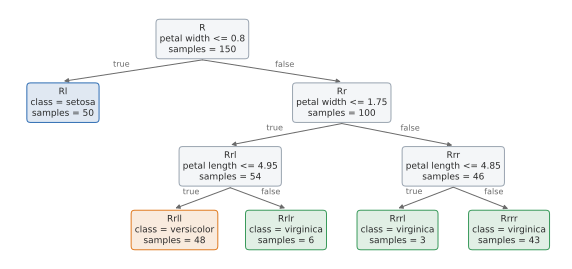
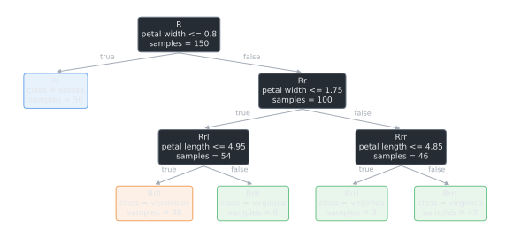
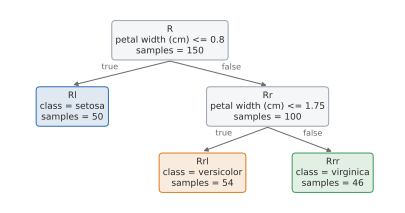
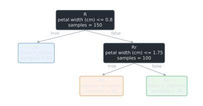

Reading the tree#
A RuleTree is meant to be read. This guide shows how to get its rules, draw it, walk its nodes and explain its predictions. The examples use a classifier on the iris data set:
from sklearn.datasets import load_iris
from RuleTree import RuleTreeClassifier
iris = load_iris()
names = ["sepal length", "sepal width", "petal length", "petal width"]
model = RuleTreeClassifier(max_depth=3, random_state=0).fit(iris.data, iris.target)
Rules#
get_rules returns the rules as a nested dictionary, and print_rules prints them:
rules = model.get_rules(columns_names=names)
model.print_rules(rules)
|--- petal width <= 0.8
| output: 0
|--- petal width > 0.8
| |--- petal width <= 1.75
| | |--- petal length <= 4.95
| | | output: 1
| | |--- petal length > 4.95
| | | output: 2
| |--- petal width > 1.75
| | |--- petal length <= 4.85
| | | output: 2
| | |--- petal length > 4.85
| | | output: 2
Each node of the dictionary has its statistics and, for an internal node, the condition of the
left child and its negation; the children are in left_node and right_node:
print(rules["textual_rule"], "|", rules["not_textual_rule"])
print(rules["prediction"], rules["prediction_probability"].round(2))
print(rules["left_node"]["is_leaf"], rules["left_node"]["prediction"])
petal width <= 0.8 | petal width > 0.8
0 [0.33 0.33 0.33]
True 0
Tip
The thresholds are in the scale of the training data. If the data were standardized, pass the
scaler to get_rule of the stumps (or to export_graphviz) to see them in the original
scale.
Drawing the tree#
plot_tree draws the tree with matplotlib, as sklearn.tree.plot_tree does for the
scikit-learn trees (it requires the plot extra). It returns the matplotlib axes of the
drawing, which a notebook shows and savefig saves as PNG, SVG or PDF:
ax = model.plot_tree(columns_names=names, class_names=list(iris.target_names))
ax.figure.savefig("iris_tree.svg")
# the box of each node is a text whose gid is the id of the node
print([text.get_text().split("\n")[1] for text in ax.texts if text.get_gid() in ("R", "Rl")])
['petal width <= 0.8', 'class = setosa']




model.plot_tree(columns_names=names, class_names=list(iris.target_names)). The arrow “true”
leads to the child that gets the instances for which the rule is true.#
Each internal node shows its id, its rule and its number of training instances; each leaf its
prediction: the class, the value (one per target) or the cluster. The drawing works with every
stump, since each stump says what its node shows (get_plot_rule): the rule, and for the
shapelet and proximity stumps also the plot of their shapelets (see Tabular data, time series and images). Its
options:
ax: the axes to draw on, e.g. a subplot of a larger figure. By default, a new figure sized on the number of leaves and on the depth;max_depth: the depth drawn; the subtrees below are shown as(...), as for large trees;node_idsandsamples: whether to show the ids and the number of instances;filled: whether to color the leaves by class, cluster or predicted value;fontsize: the size of the text; by default, the largest with which the boxes do not overlap;wrap: the maximum number of characters per line. Long rules are split before their comparison operator, then between words (mean fractal dimension <= 0.062becomesmean fractal/dimension/<= 0.062), so that the boxes of trees with long feature names are narrower and the text larger;colors: the colors of the boxes, of the arrows and of the classes, e.g. for a dark background (the figures of this documentation are drawn so);scalerandfloat_precision: as forget_rule.
plot_tree is also a method of the nodes, to draw a subtree: model.get_node_by_id("Rr").plot_tree().
Graphviz#
export_graphviz returns the tree as a Graphviz graph instead (it requires the graphviz
extra). Its DOT source can be read or saved; rendering it to an image also requires the Graphviz
programs:
graph = model.root.export_graphviz(columns_names=names)
print(graph.source.splitlines()[1].strip())
R [label="petal width <= 0.8" shape=box]
model.export_graphviz(columns_names=names, filename="iris_tree") # writes iris_tree.pdf
In the Graphviz drawing, the left (green) edge of a node is followed when its condition is true.
Nodes#
Each node has an id that is its path from the root: "R" is the root, "Rl" and "Rr"
its left and right children, "Rrl" the left child of "Rr", and so on.




The ids of the nodes of a tree of depth 2 on iris. The left child of a node gets the instances for which its rule is true.#
print("internal nodes:", list(model.get_predicates()))
print("leaves:", list(model.get_leaf_nodes()))
node = model.get_node_by_id("Rr")
print(node.get_depth(), node.samples, node.prediction, node.is_leaf())
print(node.stump.get_rule(columns_names=names)["textual_rule"])
internal nodes: ['R', 'Rr', 'Rrl', 'Rrr']
leaves: ['Rl', 'Rrll', 'Rrlr', 'Rrrl', 'Rrrr']
1 100 1 False
petal width <= 1.75
The stump of an internal node also exposes its split: feature_original (the feature) and
threshold_original (the threshold, or the value of a categorical feature).
Leaves of the instances#
apply returns the leaf reached by each instance, e.g. to group the instances by rule:
import numpy as np
leaves = model.apply(iris.data)
for leaf, count in zip(*np.unique(leaves, return_counts=True)):
print(leaf, count)
Rl 50
Rrll 48
Rrlr 6
Rrrl 3
Rrrr 43
Contributions of the features#
local_interpretation decomposes each prediction, as in treeinterpreter: the class
probabilities of an instance are the ones of the root (the bias) plus a contribution of each
feature, the change of probabilities along the splits on that feature in the path of the
instance.
prediction, bias, contributions = model.local_interpretation(iris.data)
instance = 100
print("prediction:", prediction[instance].round(2))
print("bias:", bias[instance].round(2))
for name, contribution in zip(names, contributions[instance]):
print(f"{name}: {contribution.round(2)}")
prediction: [0. 0. 1.]
bias: [0.33 0.33 0.33]
sepal length: [0. 0. 0.]
sepal width: [0. 0. 0.]
petal length: [ 0. -0.02 0.02]
petal width: [-0.33 -0.31 0.64]
The prediction is the bias plus the sum of the contributions. local_interpretation works for
the classification and regression trees with the decision tree stumps on tabular data.